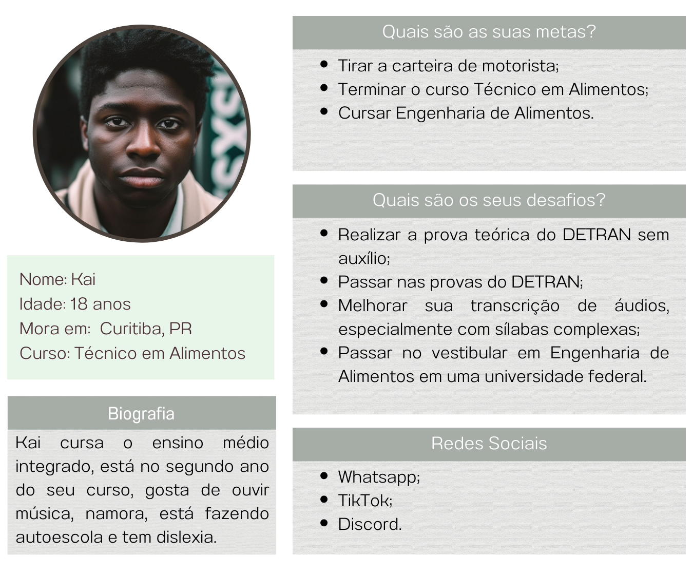
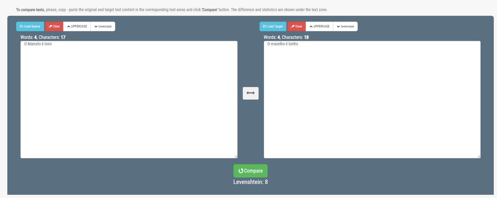
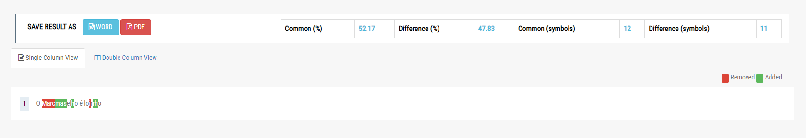
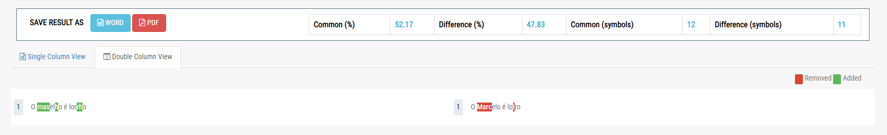
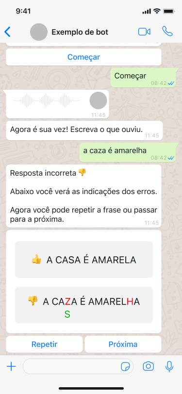
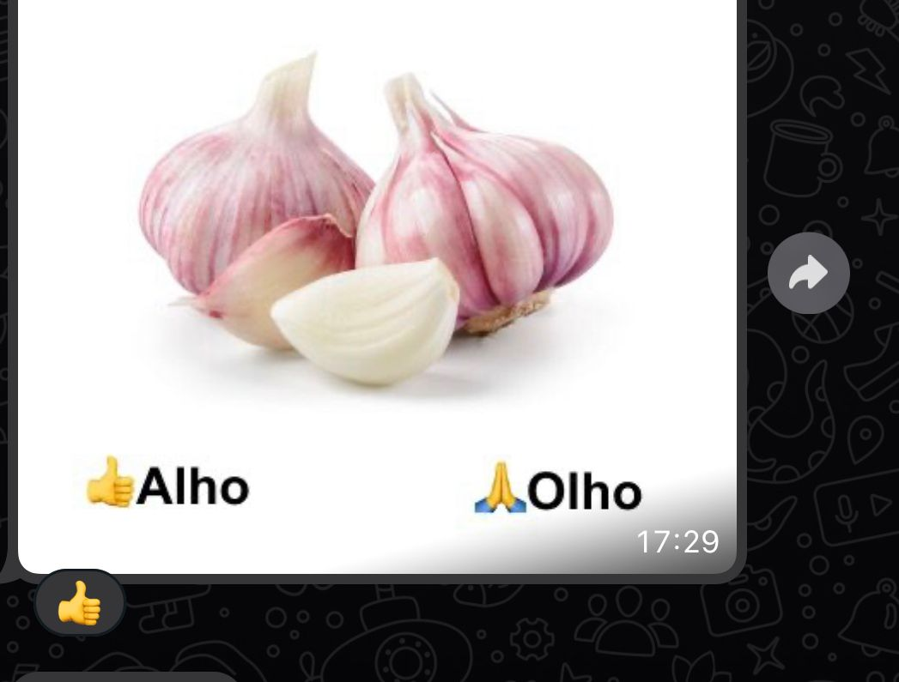

Autores: Bruna Naomi Yamanaka Silva, Gabriela Bogomolof Taquegami, Henrique da Gama Saczkowski, Otávio Baziewicz Filho e Vinicius Coradassi Brusamolin
Este documento foi produzido com o propósito de analisar o caso de um estudante dislexico do IFPR Colombo e formular possíveis dinâmicas para formular um fluxo que esse estudante (que iremos chamar de Kai) pode seguir para uma possível alfabetização. Além disso, também desenvolvemos um protótipo de um possível aplicativo que integre todas as necessidades expostas nas dinâmicas, com base na recepção do Kai sobre elas.
Criamos, para melhor exemplificação, a seguinte persona, que foi baseada no estudante do IFPR que nos ajudou a criar as dinâmicas. A imagem que representa a pessoa foi gerada artificialmente.
Biografia:
Kai cursa o ensino médio integrado. está no segundo ano do seu curso, gosta de ouvir música, namora, está fazendo autoescola e tem dislexia.
Quais são suas metas:
Quais são seus desafios:
Redes sociais: Whatsapp; TikTok; Discord.
As dinâmicas pensadas para esse perfil foram 4, e, posteriormente, uma quinta foi adicionada. As dinâmicas foram:
Objetivo: Validar o fluxo de imagem -> texto e texto -> imagem
Fluxo:
Imagens para essa atividade: Garfo, Chocolate, Salada, vegetais, brócolis.
Validar a capacidade de diferenciar palavras com grafia parecida, mas significados diferentes
Fluxo:
Imagens para essa atividade: Barco/Braço, Alho/Olho, Doce/Dose, Caju/Cajá, Melancia/Melanina
Validar a capacidade de verificar a correspondência entre uma imagem e uma palavra
Fluxo:
Palavras utilizadas nessa atividade: camarão, cebolinha, tomate
Verificar se o Kai consegue saber em qual das palavras a acentuação está correta
Fluxo:
Palavras utilizadas nessa atividade: Açúcar, Cítrico, Fábrica, Glutén, Papel (colocar acento onde não tem).
Verificar se o Kai consegue transcrever um áudio recebido
Fluxo:
A prática das dinâmicas em sala de aula foi muito proveitosa. Mostrou que o Kai aprova os métodos - desde que melhor trabalhados no futuro -. Existe uma preferência por frases ao invés de palavras soltas, e temas mais condizentes com situações práticas de sua vida, como CNH ou música.
Aplicando o método SUS (System Usability Scale), obtivemos uma nota de 50 pontos, o que é abaixo da média. Apesar de baixa, os pontos específicos que levaram a essa nota foram: “Eu acho o sistema desnecessariamente complexo.”, “Eu acho que as várias funções do sistema estão muito bem integradas.”, “Eu acho que o sistema apresenta muita inconsistência.” e “Eu achei o sistema atrapalhado de usar.”. Percebe-se que estes focam não no conteúdo, mas na forma de protótipo em que este foi apresentado. Portanto, este pode ser melhorado em versões futuras.
Com o resultado das dinâmicas apresentadas, podemos pensar em um fluxo de utilização de aplicativos externos que possam remeter ao passo a passo apresentado na dinâmica que foi melhor aceita pelo estudante, ou seja, um fluxo para treinamento de escrita com frases pré definidas.
Essa dinâmica pode ser realizada de forma individual ou com o auxílio de uma outra pessoa.
Caso opte pela ajuda de uma outra pessoa, essa pessoa irá o auxiliar com o envio de áudios sobre temas diversos (de preferência sobre temas que o estudante tenha interesse).
Após o recebimento desses áudios, o estudante poderá fazer uma das seguintes operações: escrever o texto ou digitá-lo.
Caso prefira digitar, o fluxo seguirá da seguinte forma:
Caso prefira escrever, o fluxo terá algumas alterações:
Caso queira treinar sozinho, o estudante pode:
Um exemplo de aplicativo que transforma de escrita para texto digitado via foto é o aplicativo do Google Tradutor.
Para a comparação de textos pode ser utilizado o site https://countwordsfree.com/comparetexts, que funciona da seguinte forma:
No campo de digitação esquerdo adiciona-se o texto original e no campo direito o texto escrito/digitado. Caso não queira comparar as diferenças entre letras maiúsculas e minúsculas pode se escolher uma das opções na parte de cima (para ambas as frases). Se selecionar a opção Uppercase todo o texto ficará com letras maiúsculas e, caso opte pela Lowercase, todas as letras ficarão minúsculas.
Após isso, devemos utilizar o botão chamado “Compare”, que serve para fazer a comparação entre as duas frases.
A saída padrão da comparação mostra as seguintes informações:
Além disso, logo abaixo, pode ser escolhida uma das duas formas de se mostrar as diferenças entre os dois textos.
A primeira forma (que está na imagem acima) é a de Single Column View, que mostra em uma linha só as letras removidas (em vermelho), as adicionadas (em verde) e as que não mudaram (em preto).
Para a segunda forma (imagem abaixo) as palavras são mostradas em colunas lado a lado, mantendo o padrão das cores da primeira forma.
Outros sites e aplicativos de comparação de letras e de transformação de escrita para digitação podem ser utilizados, sendo estes apenas exemplos para guiar quem estiver interessado em aplicar alguma dessas dinâmicas.
O protótipo a seguir é uma referência para uma das atividades sugeridas dentro desse documento. Ele é pensado para ser um chatbot de whatsapp onde o usuário receberá áudios contendo frases curtas e logo em seguida deverá escrevê-las. O chatbot fará uma comparação entre a frase correta e o que o usuário escreveu e em seguida aponta os erros caso existam.
Baseados nos resultados da dinâmica feita com a nossa persona Kai, relatamos aqui atividades (focadas mais no exercício de memória) que poderiam auxiliar na alfabetização e/ou na vivência independente do nosso perfil de estudo. Essas atividades têm como objetivo serem exemplos a serem implementados como software (aplicativo, bot no discord, ferramenta para o whatsapp ou telegram e etc), mas também podem ser testadas manualmente em cenários controlados, como o realizado por nós, simulando uma ferramenta automatizada em um grupo do whatsapp.
Essas atividades são baseadas nas informações coletadas durante a dinâmica, podemos afirmar que as funcionalidades tecnológicas a seguir são interessantes para o perfil da persona estudada, mas todas as atividades sugeridas não tem embasamento de um educador ou pedagogo e seria de extremo valor passar por validação desses profissionais.
Funcionalidades tecnológicas que percebemos serem úteis para o perfil estudado (Em apps externos ou fazendo um próprio para o caso):
Conjunto de sílabas de 3 ou mais letras para o usuário ouvi-las e tentar escrever, intercalando com o usuário receber uma sílaba de 3 ou mais letras em texto e ter que responder com um áudio com o som dessa sílaba.
No cenário ideal para essa atividade teríamos uma ordem aleatória para o aparecimento dessas sílabas, feedback e mostraremos a resposta correta. Essa atividade é importante porque a nossa persona domina a leitura e o som das sílabas mais simples e seria bom exercitar a memória com sílabas mais complexas, ressaltando principalmente a dificuldade com o uso da letra “H”.
Exemplos: Lhe, ção, nhou, cha, coi, ssa, gam…
Conjunto de palavras similares, mostraremos uma foto com esse item e duas opções de resposta com essas palavras similares para o usuário tentar aceitar. Esse exercício também funcionaria trocando a imagem pelo áudio da palavra.
Exemplo visual da dinâmica pelo whatsapp:
Essa atividade pode ser subdividida em níveis de dificuldades de palavras, conjuntos temáticos ou até quantidade de sílabas, por exemplo. Aqui podemos intercalar várias dinâmicas, mostrar uma foto e pedir para escrever/ditar, receber um áudio e escrever/ditar, variar as dinâmicas e separar em níveis pode deixar a atividade mais interessante (gameficada?) e tornar mais fácil avaliar o desempenho por nível.
No caso da nossa persona por exemplo, pudemos ver que ele teve facilidade em palavras comuns e sem sílabas complexas como “Salada".
Exemplos:
A própria persona nesse caso percebeu a necessidade de uma atividade mais desafiadora e sugeriu a inserção de frases, nesse caso imaginamos ter o audio de uma frase e o usuário ter que escrever essa frase, é importante que a pessoa possa ouvir várias vezes o áudio e que não tenha limite de tempo para ela escrever porque essa atividade pode ser mais confusa e demandar mais da pessoa.
É sempre interessante ter o feedback visual e comparativo entre a resposta enviada e a solução do exercício, além de que entra também no caso de dividir em níveis para melhor avaliação.
Exemplo ocorrido na dinâmica:
Áudio: O preço da passagem subiu
Resposta: O peso da pasasagha subriu
Este trabalho foi desenvolvido como atividade de extensão de Curadoria de Tecnologias Assistivas realizada em conjunto à disciplina de Acessibilidade e Inclusão Digital ministrada na UTFPR, câmpus Curitiba no primeiro semestre de 2023.
Coordenador: Leonelo Dell Anhol Almeida.
Equipe Executora: Bruna Naomi Yamanaka Silva, Gabriela Bogomolof Taquegami, Henrique da Gama Saczkowski, Otávio Baziewicz Filho e Vinicius Coradassi Brusamolin
Contato: leoneloalmeida@utfpr.edu.br
Esta obra está licenciada como Creative Commons Atribuição-Não Comercial-Compartilha Igual 4.0 Internacional